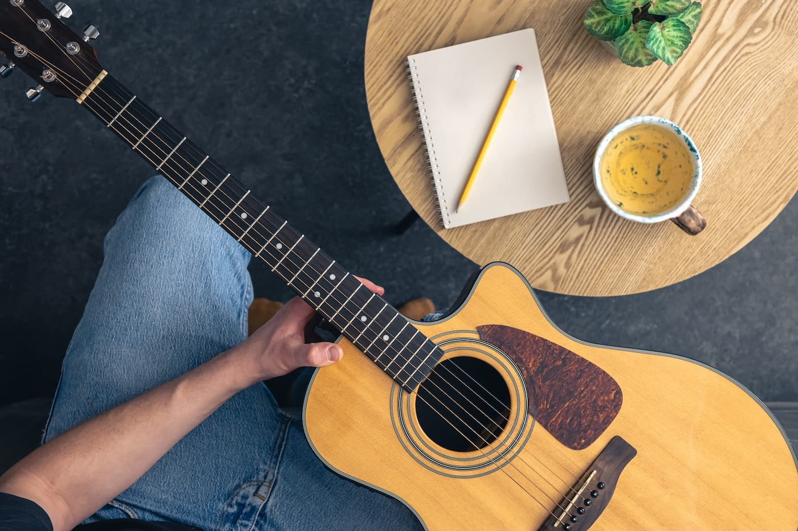

Comment s'approprier un lick (et ne plus jamais l'oublier)
Apprendre une phrase par cœur, la passer au métronome, l'oublier la semaine d'après. Le vrai travail commence quand tu arrêtes de reproduire — et que tu modèles. Un système en 5 étapes.
Lire l'article